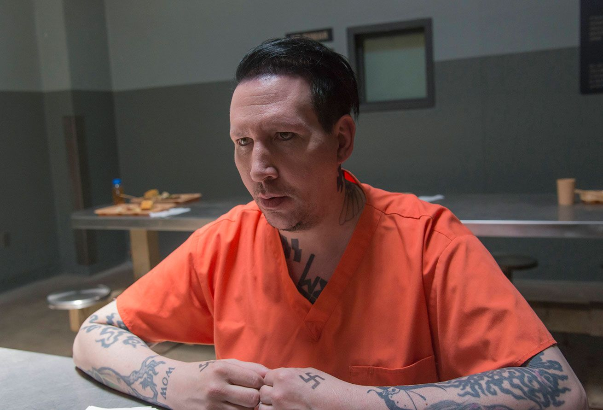

Мерлин Менсон
Бра́йан Хью Уо́рнер (англ. Brian Hugh Warner), более известный под псевдонимом Мэ́рилин Мэ́нсон (англ. Marilyn Manson; род. 5 января 1969, Кантон, Огайо, США) — американский, христианский рок-певец, композитор, актёр, поэт-песенник, художник и бывший музыкальный журналист, основатель и бессменный лидер рок-группы Marilyn Manson. Его сценический псевдоним сформирован из сложения имён двух американских знаковых фигур, а именно актрисы Мэрилин Монро и преступника Чарльза Мэнсона.
Джони Депп

Джон Кристофер «Джонни» Депп II (John Christopher«Johnny»Depp), Овенсборо, штат Кентукки, США) — американский актёр, режиссёр, музыкант, сценарист и продюсер. Лауреат премии «Золотой глобус» за роль в фильме Тима Бёртона «Тодд Суини , демон-парикмахер с Флит-стрит».
Николас Кейдж

Ни́колас Кейдж (англ. Nicolas Cage; настоящее имя — Ни́колас Ким Ко́ппола (англ. Nicolas Kim Coppola); род. 7 января 1964[1][2][…], Лонг-Бич, Калифорния, США) — американский актёр, кинорежиссёр и продюсер. Лауреат премий «Оскар» и «Золотой глобус». Родился 7 января 1964 года в Калифорнии, в городе Лонг-Бич. Родители Аугуст Флойд Коппола, профессор литературы, и Джой Фогельзанг, танцовщица и хореограф, назвали его Николас Ким Коппола.
Рассел Бренд

Ра́ссел Э́двард Брэнд (англ. Russell Edward Brand, род. 4 июня 1975, Грейс[d], Эссекс) — британский стендап-комик, актёр, публицист, писатель, теле- и радиоведущий, общественный деятель. В Великобритании Рассел Брэнд получил известность в 2000-е годы как ведущий ток-шоу телеканала BBC Big Brother’s Big Mouth и соведущий «Шоу Рассела Брэнда» на радиостанции BBC Radio 2. Брэнд сыграл в ряде британских ситкомов и выступил ведущим нескольких церемоний вручения премий.